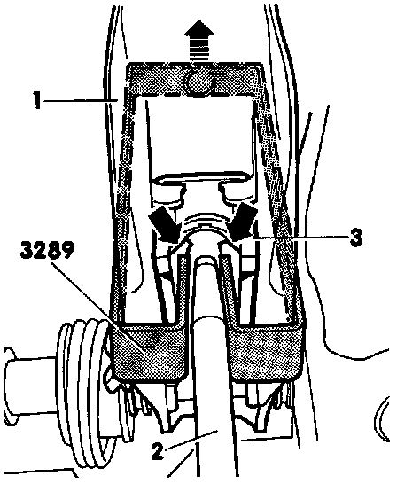
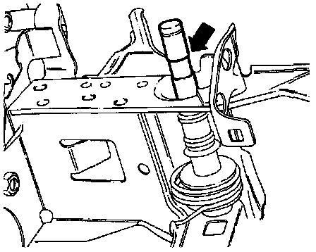

Brake Pedal to Brake Booster, Disconnecting and Connecting
NOTE: See pedal cluster for related information.Removal
1. Remove trim under instrument panel on left side.
2. Remove Brake Light Switch from bracket.
Brake Pedal Shaft Retaining Spring Removing:

3. Pry out clip tab (A) with screwdriver, then press clip in direction of arrow (2)
NOTE: When installing the clip, make sure surface (B) is vertical.
Brake Pedal From Booster Rod Disconnecting:

4. Disconnect pedal from booster pushrod as follows:
NOTE: Illustration shows tool and pushrod detail with pedal cluster removed for clarity.
a. Push brake pedal in direction of vacuum brake booster, and hold.
b. Install removal tool No. 3289, or equivalent, and pull toward rear while holding brake pedal stationary (pedal must not be allowed to move backward).
c. Mounting (3) retaining tabs (arrows) will be pressed off ball-head of pushrod (2).
d. Pull tool 3289 and brake pedal together toward the rear.
e. Brake pedal (1) will be pulled off ball-head of pushrod (2)
5. Remove over-center spring for clutch pedal. Refer to Transmission and Drivetrain.
6. Insert Phillips-head screwdriver under tab (A), press clip in direction of (arrow).
7. Unhook spring from brake pedal.
8. Pull out pedal shaft to left side.
Installation
1. Install in reverse order of removal, noting the following information.
Pedal Shaft Position:

2. Pedal shaft
- Installed position, cut-down section (arrow) is on left side.
Pedal To Booster Rod Connecting:

3. To reconnect Brake pedal and pushrod, hold ball-head of pushrod and move pedal in direction of arrow until parts lock together with an audible click.